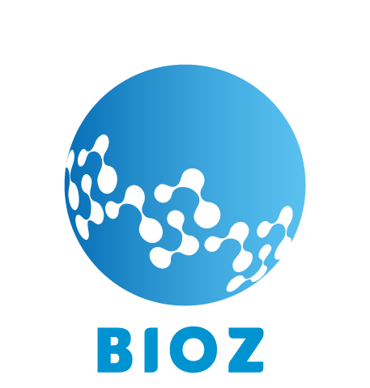

Scungio
I build sustainable projects that create real impact.
Business Development · Go-to-Market · Product Innovation · Circular Economy
I enjoy building projects from the ground up.
Throughout my career I've worked where sustainability, product development and business strategy intersect.
I've helped launch new ventures, develop products, build supplier networks, create go-to-market strategies and coordinate multidisciplinary teams.
Every project has been different. My role has always been the same: turn opportunities into projects that work.
My contribution changes in every project. The pattern never does.
Construyendo SOIL
Construyendo un negocio de packaging compostable desde cero.
SOIL comenzó como una prueba con un único material bioplástico. En los años siguientes se convirtió en un negocio completo de packaging compostable que atiende empresas en toda Argentina.
Crear un negocio viable en torno al packaging compostable desarrollando simultáneamente productos, proveedores y demanda de mercado.
Me uní a SOIL antes de que el negocio existiera formalmente y lideré gran parte de su desarrollo.
Creé la marca, construí la red de proveedores, desarrollé la primera estrategia de go-to-market, coordiné el desarrollo de productos, apoyé el marketing, operé el negocio y compartí la responsabilidad del crecimiento comercial.
- Elegir el proveedor de bolsas correcto mejoró precios, disponibilidad y desarrollo de productos.
- Imprimir "Compostable" directamente en los sorbetes generó un fuerte diferenciador comercial.
- Pasar de distribuidores a ventas directas B2B aceleró el crecimiento.

Lanzando BIOZ Ventures
Creando emprendimientos de sustentabilidad desde cero.
BIOZ fue creado como una plataforma para desarrollar nuevos negocios ambientales, reuniendo un pequeño equipo y un portfolio de ideas en etapa temprana.
Lanzar múltiples emprendimientos simultáneamente con recursos limitados y sin un modelo probado a seguir.
Coordiné un equipo multidisciplinario de 10 personas mientras ayudaba a construir la estrategia de negocio, marca, comunicación y desarrollo de productos de cuatro emprendimientos.
Mi nivel de involucramiento varió según el proyecto, con ownership completo en EMF y participación estratégica en los demás.
- Priorizamos los proyectos con mayor potencial de implementación.
- Concentramos recursos donde el crecimiento a largo plazo era más sólido.

Lideré el proyecto de concepto a ejecución, definiendo el producto, modelo de negocio y estrategia general mientras coordinaba su desarrollo.
Llevé la EMF Mask de una idea inicial a un producto listo para el mercado en menos de un año.


Desarrollé el plan de negocio, marca y presentación comercial mientras coordinaba la dirección estratégica inicial del proyecto.
Creé el business case utilizado para presentar el emprendimiento a potenciales stakeholders y guiar su desarrollo inicial.


Apoyé la etapa inicial validando el producto, contribuyendo al modelo de negocio y definiendo la estrategia inicial de go-to-market.
Ayudé a establecer las bases comerciales del proyecto antes de entregarlo a un equipo dedicado.
 ×
×

Liderando Ocean Uprise
Diseñando e implementando una intervención ambiental.
Ocean Uprise fue un programa internacional organizado por Parley enfocado en proteger los océanos a través de intervenciones ambientales locales.
Diseñar e implementar una solución ambiental en tres meses, sin presupuesto y sin un modelo existente a seguir.
Diseñé, planifiqué y coordiné la construcción e instalación de una barrera fluvial flotante para capturar residuos plásticos antes de que llegaran al Río de la Plata.
Convoqué voluntarios, coordiné donaciones de materiales de empresas y dirigí la implementación de principio a fin.
- Priorizamos simplicidad, velocidad y materiales locales para maximizar la viabilidad.
- Construido mediante donaciones y coordinación de voluntarios en lugar de esperar financiamiento.
La sustentabilidad no sucede dentro de una sola organización.
A lo largo de seis años, contribuí a múltiples iniciativas de sustentabilidad intersectoriales en Argentina.

Cuatro años de colaboración entre 200+ empresas y el municipio co-diseñando iniciativas de acción climática.

Participé activamente dentro de esta Red. Dentro de este espacio articulado por empresas, pymes y ONGs, se proponen diseñar e implementar políticas, estrategias y acciones que impulsan la economía circular, con bases en la sustentabilidad promoviendo nuevos modelos económicos.

Llevé adelante la solicitud para nuestros productos en el lanzamiento del Sello de Bioproducto Argentino del Ministerio de Agricultura, Ganadería y Pesca de la Nación, que premiaba a quienes apuestan por una producción más responsable y comprometida con el futuro del planeta.

Participé por 4 años seguidos del evento de sustentabilidad más grande del país, con stand propio, haciendo conexiones claves y abriendo oportunidades comerciales.
Construyo cosas que importan — y me quedo hasta que funcionan.
Soy Diseñador Industrial que pasó seis años construyendo emprendimientos de sustentabilidad, equipos comerciales y redes intersectoriales en Buenos Aires. Trabajo en el cruce entre impacto de negocio y responsabilidad ambiental — y me importa cada proyecto lo suficiente como para quedarme hasta que funcione.
Abierto a roles de asesoramiento, partnership o posiciones full-time donde el impacto y el crecimiento vayan de la mano.